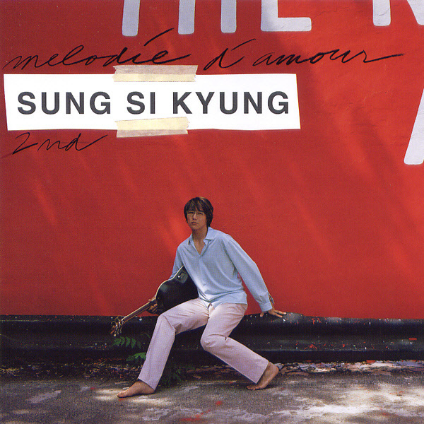
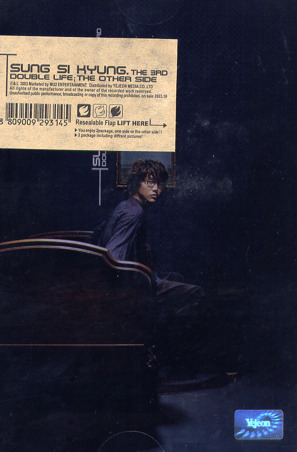
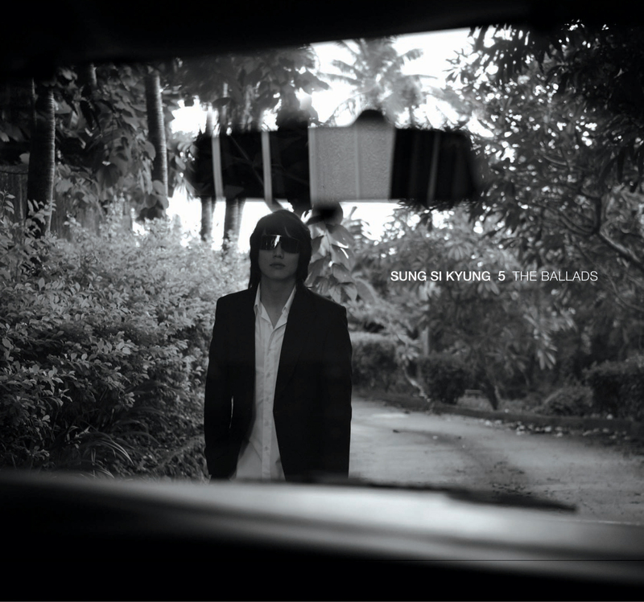
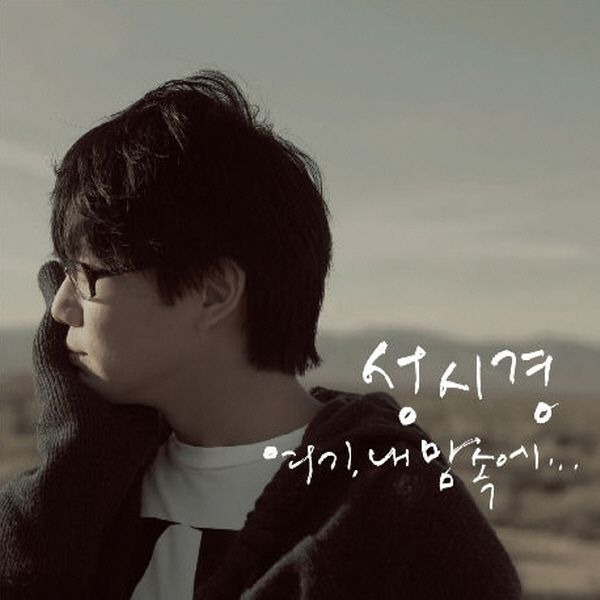

|
1집 처음처럼 (2001. 04.)
- 처음처럼
- 포용
- 내안의 그녀
- 미소천사
- 동화
- 축복
- For U
- 헤어지던 날
- 커져 버린 사랑
- Show Me Your Love
- 그리움
- 내가 너의 곁에 잠시 살았다는 걸
- 내게 오는 길(Title)
|

2집 Melodie D' Amour (2002. 07. 29)
- 넌 감동이었어
- 선인장
- 사랑해서 슬픈 날
- Love Letter
- 우린 제법 잘 어울려요(Title)
- 이렇게라도
- 바램
- Happy Birthday To You
- 좋을텐데
- 첫 눈에 반하다
- 사랑이 변하나요
- 슬픔이 슬픔을
- 어느 멋진 날
- Sweet Dream
- 사랑이겠죠(With. 김조한)
|

3집 Double Life: The Other Side (2003. 10. 16)
- Memory
- 외워 두세요(Title)
- 팝콘
- First Date
- 차마...(Title)
- Kiss할까요
- 10월에 눈이 내리면
- Everyday birthday
- 내가 뭐 그렇죠
- 그날이후
- 그래도... 좋아
- Doing Alright
- Forever With You
- 저 하늘 걸고
|
4집 다시 꿈꾸고 싶다 (2005. 04. 07)
- 다시 시작해도 될까요
- 잘 지내나요(Title)
- 안녕
- 잊혀지는 것들에 대하여
- 일학년 일반(Feat. 김진표)
- 눈물 편지
- 바보라죠
- 후회하지 말아요
- 콩깍지
- 고마워
- 어느 흐린 날의 행복
- 당신에겐 특별한 뭔가가 있어요
- 쉬어요
- 두 사람
|
|

5집 The Ballads (2006. 10. 10)
- 거리에서(Title)
- 그리운 날엔
- 사랑할 땐 몰랐던 것들
- 그 길을 걷다가
- 바람, 그대
- 나 그리고 너야
- Who do you love
- 그 이름 모른다고
- 비개인 날
- 새로운 버릇
- 굿모닝
- 기억을 나눔
- 살콤한 상상(Feat. 정선희)
- 지금의 사랑(Feat. Ann)
- 그 자리에 그 시간에
- 오, 사랑
|

6집 여기, 내 맘속에... (2008. 06. 23)
- 여기 내 맘속에(Title)
- 어디에도
- 더 아름다워져
- 안녕 나의 사랑(Title)
- 잃어버린 것들
- 그대와 춤을
- Baby You Beautiful
- 눈부신 고백
- 사랑하는 일
- 소풍
- 당신은 참..
|
7집 처음 (2011. 09. 15)
- 처음
- 노래가 되어
- 네가 불던 날
- 난 좋아(Title)
- 우리 참 좋았는데(With 박정현)
- 아니면서
- 태양계
- 오 나의 여신님
- Thank You
- 끝에
- 그대네요(Bonus Track)(With 아이유)
- 너는 나의 봄이다(Bonus Track)
|